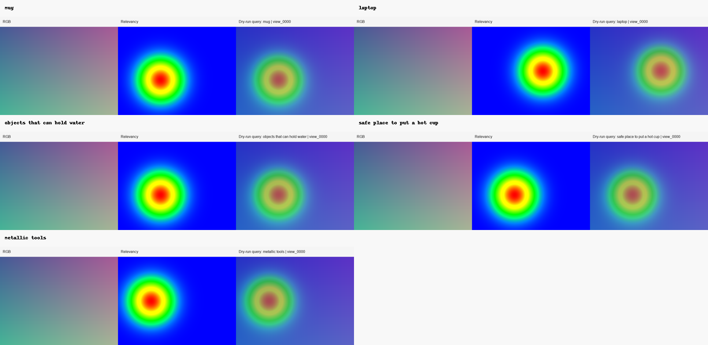
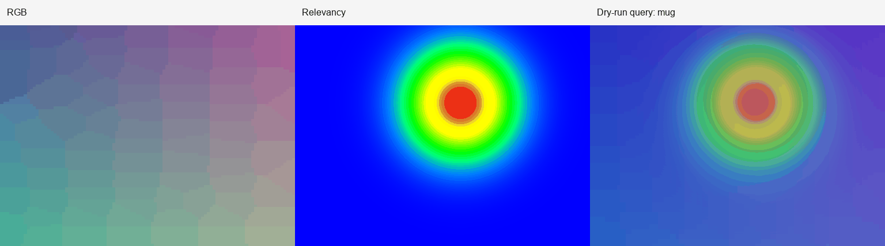
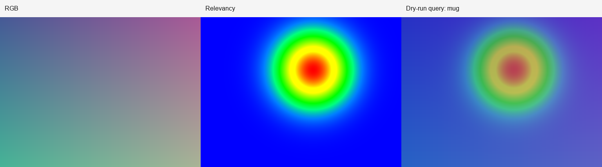
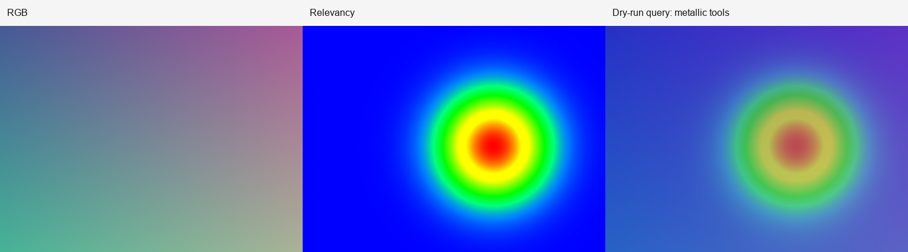

3D reconstruction
Nerfstudio wrappers for data processing and baseline NeRF training.
Research engineering portfolio
Open-vocabulary 3D scene understanding from phone video, Nerfstudio reconstruction, and LERF-style language-field querying.

Implemented research infrastructure, not a claim of new state of the art.
Nerfstudio wrappers for data processing and baseline NeRF training.
LERF-first semantic query path with OpenNeRF as a secondary adapter.
Deterministic local planner for object, affordance, material, and relation prompts.
Negative prompts are preserved as avoid evidence, with image-space conflict flags for actionable queries.
Per-query checks for overlays, localization evidence, fallback mode, confidence, counter-evidence, risk flags, and missing artifacts.
Heuristic entity-relation reports from query boxes or 3D points with explicit evidence tags.
Offline bbox labeling plus finalize tooling for turning browser-edited boxes into refreshed run evidence.
Ablation-style JSON, CSV, and Markdown summaries across variants and query sets.
Paper-style run summaries that combine metrics, evidence, limitations, and next steps.
One-page reviewer summaries with a calibrated takeaway, evidence snapshot, limitations, and safe sharing language.
Claim-calibrated CV and outreach checklists for sharing without overclaiming.
Command playbooks for upgrading smoke evidence into a real CUDA/Nerfstudio/LERF run.
Checks portfolio-facing text for unsupported SOTA, novelty, benchmark, production, or robotics-policy claims.
Capture/privacy gates, annotation QA, audits, scorecards, quality gates, and share-safe packs.
python scripts/run_scene_pipeline.py --dry-run --query mug
python scripts/generate_research_report.py --run-dir results/pipeline_runs/desk_scene
python scripts/create_annotation_workbench.py --annotations results/pipeline_runs/desk_scene/annotation_template.json --results results/pipeline_runs/desk_scene/queries --output results/pipeline_runs/desk_scene/evaluation/annotation_workbench
python scripts/finalize_annotations.py --run-dir results/pipeline_runs/desk_scene --filled results/pipeline_runs/desk_scene/evaluation/annotation_workbench/annotation_seed.json --profile smoke --export-pack --zip-pack
python scripts/compare_runs.py --root results/pipeline_runs
python scripts/validate_portfolio_pack.py --pack results/portfolio_pack
python scripts/validate_portfolio_pack.py --pack results/portfolio_pack.zip
python scripts/create_real_run_plan.py --run-dir results/pipeline_runs/desk_scene --input path/to/video.mp4 --type video --submission-packet results/pipeline_runs/desk_scene/submission_packet/submission_packet.jsonChecked-in dry-run previews show the artifact format used by real runs.



Run-scoped summaries can be regenerated locally or after a real GPU experiment.
| Scene | Status | Backend | Mode | Queries | Audit | Risk Flags | Top-k | IoU | Page |
|---|---|---|---|---|---|---|---|---|---|
| desk_scene | success | lerf | dry-run | 1 | 36 | 4 | n/a | n/a | open |